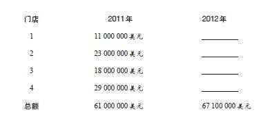

回归现象的意义不亚于发现万有引力
无论是没有察觉还是解读错误，这种回归现象对人类而言总是很陌生的，因此直到万有引力和微积分理论出现两百年后，这种现象才为人们所理解。而且，是19世纪英国最伟大的科学家之一经过艰苦卓绝的努力才探索出这一重要规律的。
弗朗西斯·高尔顿（Francis Galton）爵士是19世纪英国著名的学者，也是达尔文的表兄。他发现并命名了回归平均值的现象。1886年，他发表了《在遗传的身长中向中等身长的回归》，其中涉及对连续子代的种子大小的测量以及对子代株高和母本株高的比较。在对种子的研究中，他写下了如下的话：
实验结果看上去十分值得关注，在1877年2月9日的一次演讲中，我就先于皇家科学院将这些结果用做一次演讲的基本内容了。从这些实验可以看出，子代的高度和母本高度似乎并不相关，但似乎前者比后者更趋于平均。如果母本较高，那么子代就会变矮；如果母本较矮，则子代就会变高。实验显示，子代向平均值的回归与母本高矮的差异是成比例的。
皇家科学院是世界上最古老的独立研究机构，高尔顿很期待该机构中博学的院士们也会对他那“值得关注的实验观察”感到惊讶。但真正值得关注的是，他为之惊讶的统计规律不过是像我们呼吸的空气一样稀松平常。回归效应随处可见，但是我们却无法识别它们的真面目。高尔顿以子代高度的回归现象为起点，逐渐发现当两个测量值之间的关联不是那么完美时，此时也会出现这种回归。他借助了当时最杰出的几位统计学家的帮助，且历时多年才得出这一结论。
当按不同的标准衡量两个变量时—例如体重和钢琴技艺—如何测量这两个变量之间的回归是高尔顿要攻克的重大难题之一。要解决这一问题需要以人口作为参照标准。假设我们对某小学所有年级的100名儿童的体重和钢琴技艺进行测量，然后将两者按从高到低的顺序分别进行排列。比如说，简在钢琴技艺中排第三名，但按体重则排第27名，那么我们就可以说她弹钢琴的水平比她的体重排名靠前。我们来作些假设，这样就可以使这一现象更容易理解。
不管年龄几何，
·钢琴技艺高低仅仅取决于每周练习的时长。
·体重多少仅仅取决于冰激凌的摄入量。
·冰激凌摄入量和每周练习钢琴的时长并不相关。
现在通过排行（按统计学家的说法是“标准分”），我们可以得出更多的等式：
体重=年龄+冰激凌消耗量
钢琴技艺=年龄+每周练习时长
你会发现，当我们通过体重预测钢琴技艺或通过钢琴技艺预测体重时，就会出现回归平均值的现象。如果知道汤姆在体重中排第12位（远高于平均值），我们就可以（从统计学上）推测他比平均年龄要大，而且可能比其他孩子吃更多的冰激凌。如果知道芭芭拉的钢琴技艺排第85位（远低于平均值），我们就可以推测她应当比大多数孩子年龄小，而且每周练习的时间也少。
两个值之间的“相关系数”指的是两个值共有因素的相对比重。这个值在零和1之间浮动。我们拥有父母各一半的基因，对于像身高这种受环境因素影响很小的特征来讲，父母和子女的相关系数在0.5左右。下面的例子能帮助我们更好地了解相关系数：
·一个物体的型号用英制单位精确测量的结果与用公制单位精确测量的结果之间的相关系数为1。任何影响其中一个值的因素都会影响另一个。两者享有同样的决定性因素。
·美国成年男性自报的身高和体重之间的相关系数为0.41。如果将女性和儿童也包括进去，那么相关度就会更高，因为性别和年龄都会影响身高和体重，这便使得共有因素所占比例增加。
·学术能力评估考试成绩（SAT）和平均绩点（GPA）之间的相关系数大约是0.6。然而，研究生的潜能测试与成功之间的相关性则小得多，这在很大程度上是因为这一群体的潜能差异比较小。如果每个人都有相似的潜能，那么在衡量成功时，潜能的因素就不会占太大的比重。
·美国人收入和教育程度的相关系数约为0.4。
·家庭收入和他们电话号码后4位之间的相关系数为零。
弗朗西斯·高尔顿用了好几年的时间才确定相关性和回归性并非两个概念—它们只是从不同视角对同一个概念作出的阐释。这个概念的原则很简单，但是影响却很深远：只要两个数值之间的相关度不高，就会出现回归平均值的情况。为了阐释高尔顿的卓见，我们来看一个例子，很多人都认为这个例子很有趣：
聪明的女人常常会嫁给不如她们聪明的男人。
如果你在朋友聚会时挑起这个话题，一定会引起热烈讨论，大家肯定都愿意分享自己的看法。即使有些对统计学有所了解的人也会很自然地用因果关系去解释这个现象。一些人认为高智商的女人为了避免和同样高智商的男人竞争才这么做；或者是在择偶之时不得不妥协，因为同等智商的男人不愿意与这些女人竞争……也许还会有其他更牵强的解释。现在我们来看看下面的表述：
夫妻二人智商之间的相关性并不是绝对的。
这个观点显然是正确的，而且很无聊。谁会期待这样一种相关性是绝对的呢？那就没有什么好解释的了。不过，你认为有趣的观点和你认为毫无意义的观点又是等值的。如果夫妻二人智商之间的相关性并不是绝对的（如果男人和女人在平均智商上没有差异），那么从数学上来讲，高智商女人嫁给那些不如她们智商高的男人是顺理成章的（反之也成立）。对于这一现象，用回归平均值效应来解释要比用并不绝对的相关性来解释更通俗，也更有说服力。
你也许很同情高尔顿这样绞尽脑汁地解释回归的概念。统计学家戴维·弗里德曼（David freedman）曾说过，如果把回归的概念用在民事或刑事审判中，那么试图对陪审团解释“回归”的一方一定会输掉官司。为什么会这样呢？其中主要的原因也是本书中反复出现的主题：我们的思维常会对因果关系的解释带有很强的偏见，而且不善于处理统计数据。当我们把注意力集中在某一事件上时，相关的记忆就开始探寻其原因—更确切地说，我们会对所有早已存在于记忆中的原因进行自动搜索。当发现有回归效应时，因果关系解释就会被激活，但事实上这些解释都是不对的，因为回归平均值虽然可以用来解释现象，却无法找出其中原因。在高尔夫锦标赛中，那些第一天成功的选手通常在第二天发挥都很糟糕，而这场比赛总会吸引我们的注意力。对于这种现象最好的解释就是，那些选手第一天出奇地走运，不过这种解释缺乏我们的大脑所认可的因果关系因素。事实上，那些能够为回归效应提供巧妙解释的人往往赚得盆满钵满。如果一个商业评论员声称“今年的生意比去年要好，因为去年太糟了”，尽管他说得没错，但也很有可能很快就被电台噤声。
我们理解“回归”概念存在很多困难，这些困难皆源自两个系统—系统1和系统2。在相当数量的案例中，即便提供了一些统计数据，若无特殊说明，“相关”与“回归”的关系还是相当模糊的。因此，系统2认为理解这种关系很难。因为从某种程度上讲，这是由于我们总是要求对事物进行因果关系解释，这也是系统1的一个特征。
抑郁儿童喝了某种功能饮料，他们的情况在3个月内得到很大改善。
这个新闻标题是我杜撰的，但这则新闻所报道的内容却是真实的：如果给一群抑郁儿童喝了某种功能饮料的话，一段时间后，他们的病情会有很大的好转。如果抑郁儿童每天都花一段时间倒立，或是把一只猫抱在怀里20分钟，这些举动也可以使病情好转。多数读者读了这则新闻之后会不由自主地认为：喝功能饮料和抱猫的行为的确使抑郁儿童的病情得到了改善，但这个结论却无法得到证实。抑郁儿童是一个极端群体，他们比大多数其他儿童要压抑得多—这些极端群体在一段时间之后会回归平均水平。一连串的测试反映出来的不同压抑程度之间并无绝对的相关性，因此回归平均值（或者更确切地说是回归平均水平）这种现象又会出现：即使他们不抱猫，也不喝功能饮料，一段时间之后这些抑郁儿童的病情同样会有所缓解。为了证明喝功能饮料或是其他治疗方法是有效的，我们必须要对两组患病儿童进行比较—实验组接受了治疗（比如喝过功能饮料），对照组没接受过治疗（或只是服用过安慰剂）。我们期望的是对照组仅通过回归就能改善病情，而该实验的目的在于判定接受治疗的病人是否恢复得更快。
对回归效应作出错误因果解释的不仅仅是大众读者。统计学家霍华德。维纳曾经列出一长串杰出研究者的名字，他们也犯过同样的错误—将相关性和因果性混淆在一起。回归平均值是科学研究中的常见问题，有经验的科学家都会小心提防这种毫无缘由的因果推论所形成的陷阱。
在我最喜欢的那些关于直觉产生预测错误的例子中，有一个是根据马克斯·巴泽曼（Max Bazerman）的《管理决策中的判断》（Judgment in Managerial Decision Making）一书中的内容改编而来的：
假设你为一家连锁百货公司作销售预测。所有连锁店的规模和商品种类都非常相似，但是其地理位置、竞争状况以及其他随机因素使这些商品的销量有所不同。下列数据为2011年的营业额，请你对2012年的营业额进行预测。你已经知道自己可以接受经济学家所作的总体预测—销售额总体会增长10%。那么你将如何完成下列表格？

读过本章，你就知道将每家店的销售额增加10%显然是不对的。你应当使自己的预测具有回归性：对于业绩不好的店，预测增长率应高于10%；对于业绩较好的店，预测值应低于这个值（甚至是负值）。不过如果你咨询其他人的话，很有可能会碰钉子：这么显而易见的问题还有什么好问的？正如高尔顿历经艰难才发现的那样，回归的概念从来就不是显而易见的。
示例—回归平均值
“她说经验教会她一个道理，批评比赞扬更有用。不过她不明白这是回归平均值在发挥效用。”
“也许由于惧怕让众人失望，所以他的第二次面试没有第一次那样令人印象深刻，他第一次的表现太优秀了。”
“我们的筛选过程并不是很完美，所以我们会考虑回归性。有些极其优秀的候选人也会让我们失望，对此我们并不感到惊讶。”